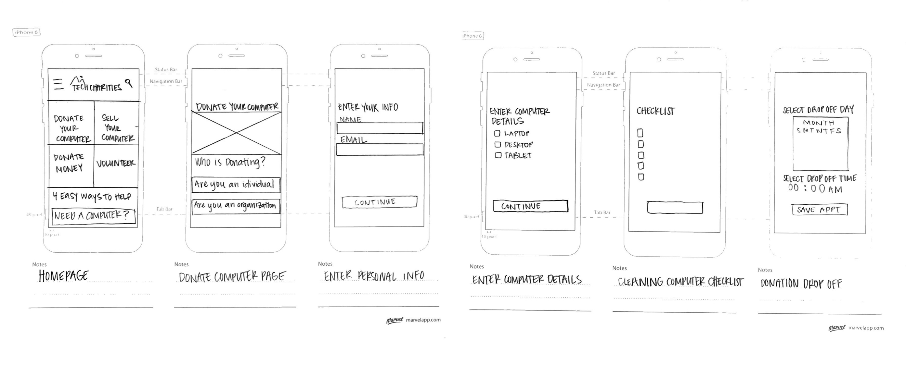

- ABOUT
- SKILLS
- WORK
- CONTACT
A responsive web redesign for a Non-Profit Organization that provides donated computers and training for those in need. Team members were: myself, Hunter Metcalf, Taylor Sonntag, and Stetson Stokes. My role on the team was UX Researcher and UI Designer.
This was a three week project, culminating in a UI prototype presentation of our redesign of the Tech Charities’ nonprofit website. We followed the double diamond design thinking model and UI design process. Our priorities were conducting user research to gain a better understanding of Tech Charities’ user demographic, fixing the navigation, and making information easily accessible.
We created a user research plan identifying the objectives of our research and a user interview script. Our research objectives were to answer these questions:
4 User interviews and 2 Client Stakeholder interviews were conducted over zoom. We also conducted a Google survey. We found that most people take old tech to a recycler or throw it out. And no one had heard of Tech Charities. We found that we needed to focus on donations. And we needed to make the process of giving personal information feel more safe/authentic/official.
We created a User Persona of Rachel Canning to help us focus on what matters to our users, their behaviors, frustrations, and motivations. We also created a User Journey map of Rachel’s user experience through donating a computer on the Tech Charities website. This helped us gain insight into how she interacts with the website and what she might find helpful or frustrating and what her goals are.


We used the “I like, I wish, what if” design thinking method to categorize the feedback from our survey and interviews. We then took the data and created a Feature Prioritization Matrix with Low difficulty, High impact to help us decide which features should be a priority. We decided the main features we needed to focus on were:
We then created a User Flow focusing on the donation process. We wanted to make the process of giving personal information feel more safe/authentic/official since we found that was a main concern among users in our survey.
We also had our flow cater the donation process to both individuals as well as companies (who might want to make bulk donations), but we decided to focus on indiviuals donating for the project.

TechCharities’ website is difficult to navigate which makes helping the charity inconvenient for the user. We believe that by redesigning the website navigation we will get users to engage by easily making donations.
After figuring out our User Flow I did some quick sketches of mobile screens to try to get an idea of which screens we would need to wireframe.
We designed for both mobile and desktop but we decided to focus in on Desktop. The Stakeholder wanted to focus on desktop and the user flow we are focusing on is people donating computers. Also, the other users (the receivers who need a computer) won’t have one so they will be working with Agencies that have desktops as their key source of information. Below were our initial UI wireframes for desktop.

I created the Style Tile that we would use for the website and applied it to mobile, tablet, and desktop. We wanted the UI of the website to have a clean, modern, informative, and intuitive feel to make it easy for users to engage and donate. We decided to combine some of the organizations existing photography with some high quality images to give the website a friendly, positive, and trustworthy quality.
For brand typography we’ve chosen to implement the font Inter. Inter is a variable font family (meaning it has a variety of widths and weights and other attributes). It was designed specifically for user interfaces on computer screens so it has high legibility in a variety of text sizes and weights and is a great font for representing TechCharities.
For our color pallet we chose a dark green as the primary color and a golden yellow as the secondary color. Some lighter shades of green and white were also implemented to give a fresh clean feel to the website. And we added buttons throughout the website with a focus on donation buttons.


Based on all our research, we developed a few scenarios with a series of tasks for our testers to follow. The main objective of the testing was to see if the users could accomplish each task and see how they would interpret the task. The main feedback we received was needing to simplify the design, especially on the form screens.
Here is the final tablet home screen and the final mobile prototype flow screens we designed.


This is the final desktop prototype for Tech Charities. Here is the link for the interactive clickable prototype.

Lessons Learned: We believe that by redesigning Tech Charities’ website users will be able to feel confident that their donations will be received and used by populations in need. As a designer I learned how to better research and design as a team with other designers. We all had different ideas, so this project helped teach me how to put our design ideas together into one cohesive design.
If we had more time, we would improve/perfect the UI even more. Some other ideas we had for the future: